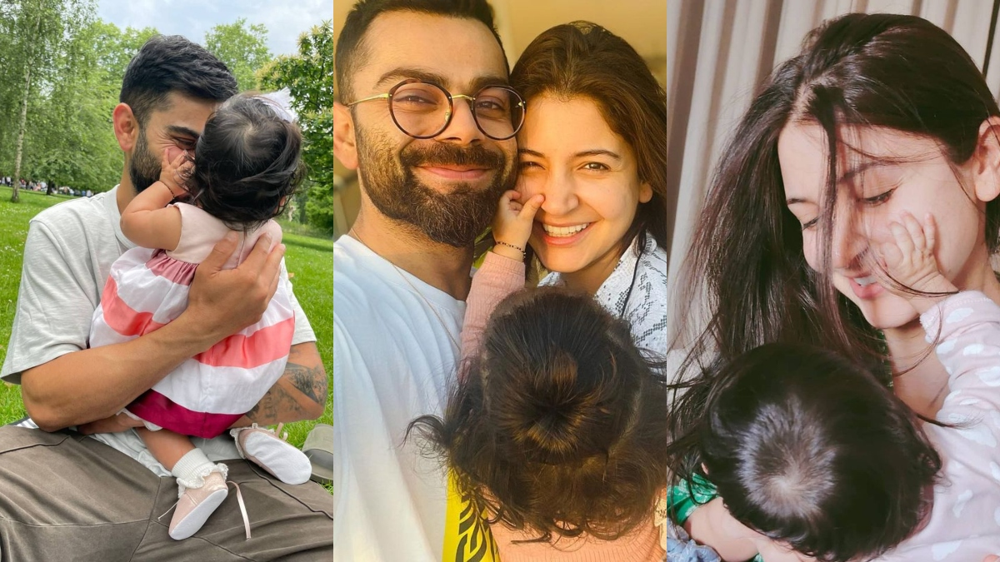

A spunky, chubby teenager with gelled hair shot to fame after leading India to glory in the Under-19 World Cup at Kuala Lumpur in early 2008. In an Indian team filled with saint-like icons worthy of their own hagiographies, Virat Kohli, with his most un-Indian, 'bad-boy' intensity, would clearly be an outcast.
IPL through the years
Ahead of the 2019 edition of the Indian Premier League (IPL), Virat Kohli showed how much faith he had in the franchise by declaring that he would perhaps end his career with the Bangalore-based Royal Challengers. The only player to be a part of a single franchise for the entire duration of the tournament (right from the start of the cash-rich league in 2008), Kohli has developed an affection with the franchise and with the fans over the period of time.
It became a no-brainer when he was asked to captain the Bangalore franchise on a permanent basis from 2012 and it also translated into more consistency with the bat. Kohli soon turned into a fan favourite even as runs flowed from his bat and eventually becoming the leading-run scorer in the history of IPL. Circa, 2016 - the India and RCB captain blasted 973 runs - the most by any player in the history of the game and it included four hundreds - the most by a batsman in a single edition. Alas, all this didn't translate into a title triumph - one that has kept Kohli and Bangalore waiting so far (As of March 2023).
Career Information
Test debut vs West Indies at Sabina Park, Jun 20, 2011 Last Test vs West Indies at Queen's Park Oval, Jul 20, 2023 ODI debut vs Sri Lanka at Rangiri Dambulla International Stadium, Aug 18, 2008 Last ODI vs Pakistan at Pallekele International Cricket Stadium, Sep 02, 2023 T20 debut vs Zimbabwe at Harare Sports Club, Jun 12, 2010 Last T20 vs England at Adelaide Oval, Nov 10, 2022 IPL debut vs Kolkata Knight Riders at M.Chinnaswamy Stadium, Apr 18, 2008 Last IPL vs Gujarat Titans at M.Chinnaswamy Stadium, May 21, 2023
Virat Kohli, the captain of the Indian cricket team, got married to his lady love, Anushka Sharma, the Indian actor-producer in Tuscany, Italy in the presence of family members of both sides.
The Indian skipper and the actor-turned-producer got married on 11 December, 2017 in a private ceremony. Virat Kohli's wedding took place pretty secretly and the rest of the world got to learn about it only after the couple posted their wedding pictures on their respective social media. The posts went viral instantly, creating a buzz in the sports and entertainment world. The event was one of the most talked-about that year.
Kohli's romantic association with Bollywood actress Anushka Sharma, which commenced in 2013, earned the duo the moniker of "Virushka".[484] During an interview with Graham Bensinger, Kohli divulged that he had encountered Sharma for the first time, when they were both were engaged in a promotional shoot for Clear shampoo.[485] Their union since then has attracted significant media interest, with persistent rumours and speculations swirling around in the press, as both parties remained reticent about publicly discussing the relationship.[486] On 11 December 2017, the couple exchanged nuptials in an intimate ceremony held in Florence, Italy, becoming one of the most talked-about celebrity couples in the country.[487] On 11 January 2021, their union was blessed with the arrival of a daughter, marking a new chapter in their lives.[488] The couple named their first born child, a daughter, Vamika. The child's name, Vamika, is derived from Sanskrit, meaning "little goddess".